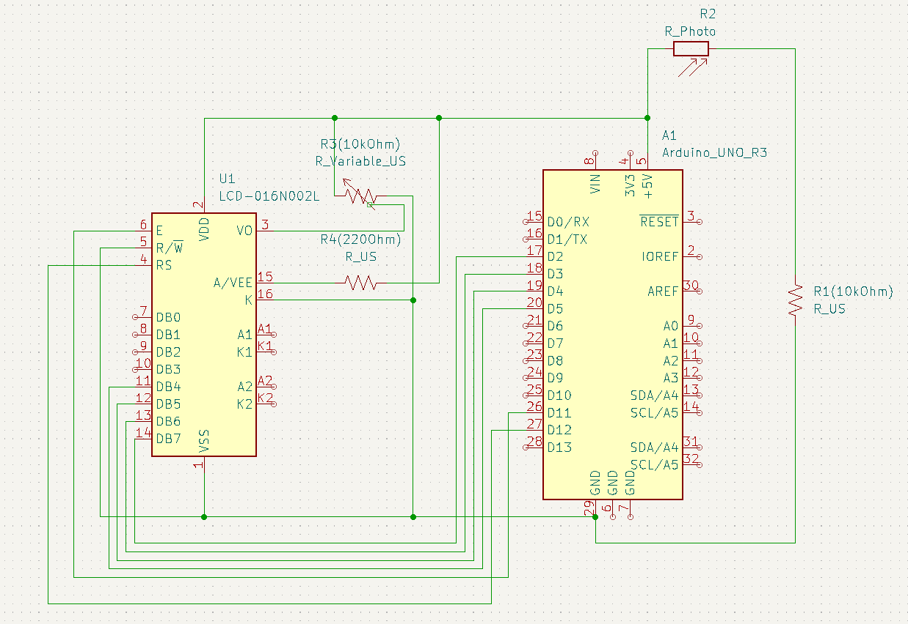
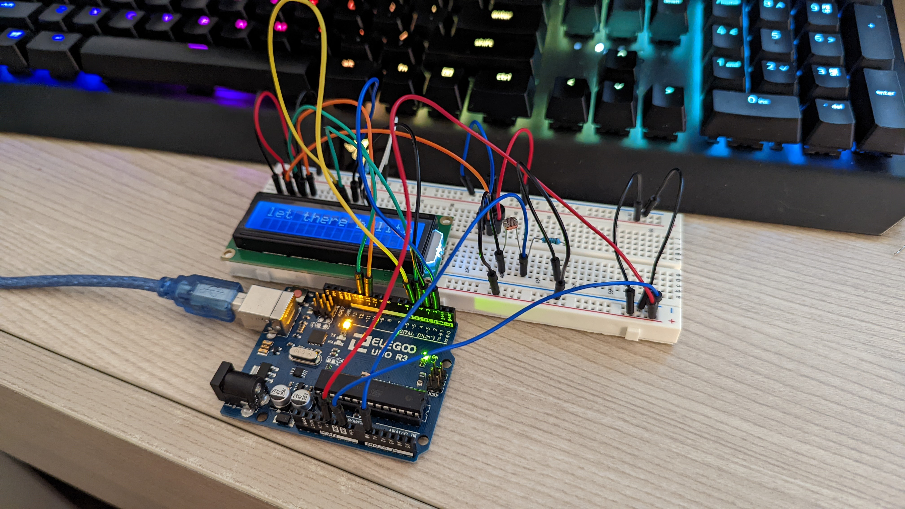
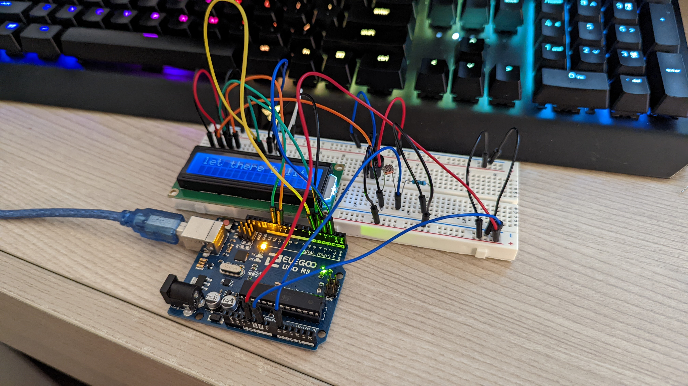

Schematic for my circuit!

The circuit was powered with 5V through USB and I used the LCD screen, photoresistor, and potentiometer from our kits.
I used a 220 ohm resistor for the LCD screen and a 10K ohm resistor for the potentiometer and photoresistor. The
potentiometer controls the contrast ratio of the LCD display and the photoresistor controls the message on the screen.
Firmware running the lights and button!
#include //library for motor
//constants
const int calibration = 30; //seconds the sensor is given to calibrate
const int motionPin = 3; //pin connected to the PIR sensor
const int motorPin = 5; //pin connected to the motor
//variable for how long the sensor doesn't sense motion
long unsigned int downtime;
//booleans to determine whether or not there has been
//motion and to record any down time
boolean nomotion = true;
boolean takeDowntime;
//Servo motor object
Servo myservo;
void setup(){
Serial.begin(9600);
pinMode(motionPin, INPUT);
digitalWrite(motionPin, LOW);
myservo.attach(motorPin);
//give the sensor some time to calibrate
Serial.print("calibrating ...");
for(int i = 0; i < calibration; i++){
Serial.print(".");
delay(1000);
}
Serial.println("CALIBRATION COMPLETE");
}
void loop(){
//if there is any motion, move the motor
if(digitalRead(motionPin) == HIGH){
myservo.write(20);
delay(500);
myservo.write(110);
//if there is no motion, report new motion and record
//downtime when the program sees there is no motion
if(nomotion == true){
nomotion = false;
Serial.println();
Serial.print("MOTION AFTER ");
Serial.print(millis()/1000);
Serial.println(" SECONDS");
delay(50);
}
takeDowntime = true;
}
//if there is no motion readings, take the time between readings
if(digitalRead(motionPin) == LOW){
if(takeDowntime){
downtime = millis(); //saving the time after sensor reading went from HIGH to LOW
takeDowntime = false;
}
//if the sensor doesn't read anything for at least 5 seconds, keep going
if(!nomotion && millis() - downtime > 5000){
nomotion = true;
}
}
}
The firmware used to control the LCD screen was programmed in Arduino! I used the screen to display the status
of light in the room, and I tested it by artificially blocking the sensor from any light with my finger (as seen below).
 
